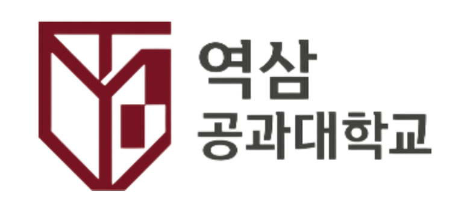
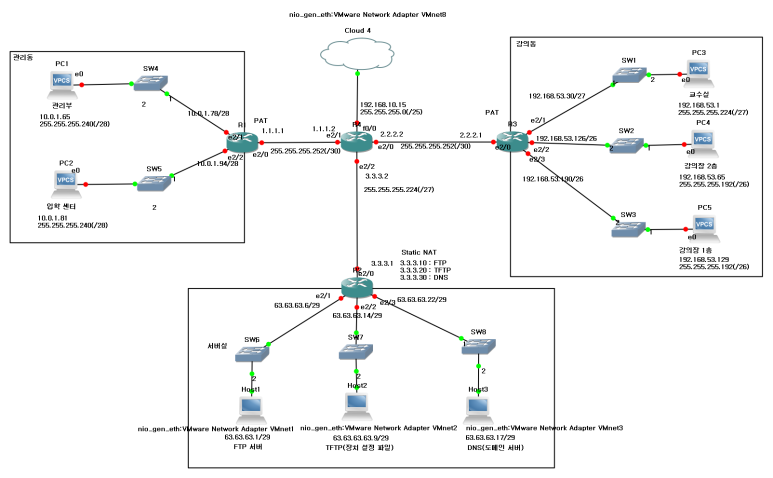
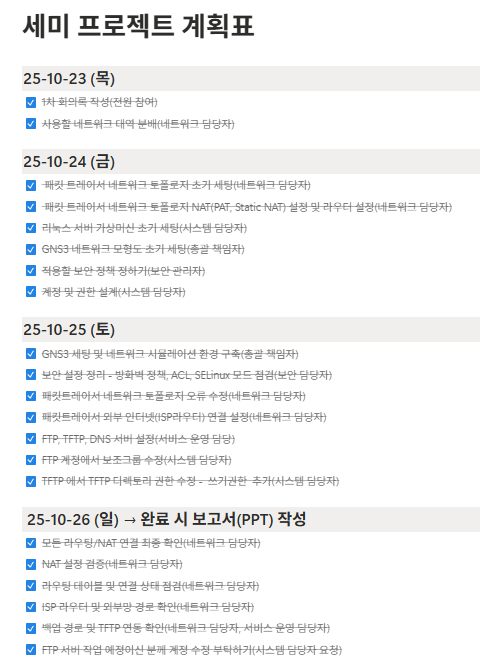
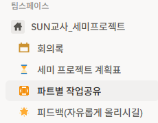
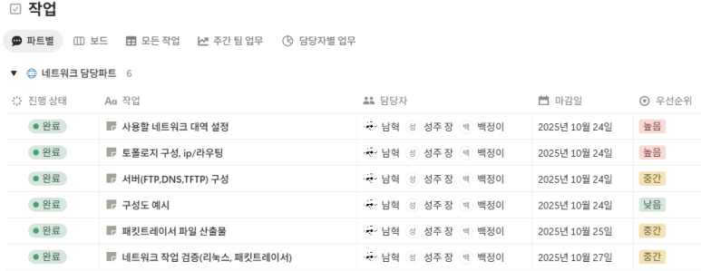
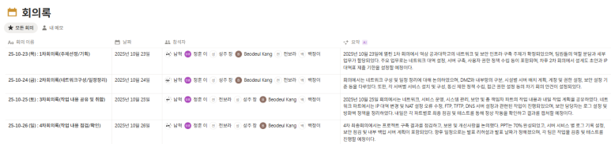

팀장 · 조율
일정·회의록·작업 로그를 한곳에 모으고, 네트워크/서버/보안 파트의 범위가 겹칠 때 우선순위와 검증 순서를 정해 병목을 줄였습니다.
 Portfolio
Portfolio
Team Lead · YIT / SUN 교사 인프라
실제 대학 환경을 모델링하여 네트워크 설계 → 서버 구축 → 보안 점검 → 운영 검증까지
인프라 전 과정을 수행한 팀 프로젝트입니다.
저는 팀장으로서 일정·회의·산출물 정리와 파트 간 조율을 맡았고,
네트워크·서버·보안이 같은 목표를 향하도록 의사결정과 검증 순서를 정리했습니다.
네트워크와 인프라는 “완성된 도면”이 없었기에, 목표 서비스와 기관 모델을 먼저 고정한 뒤 IP·NAT·라우팅·서버 존을 역으로 도출하는 역설계로 접근했습니다. GNS3에서 경로를 검증한 뒤 Rocky Linux에 옮기며, 팀장으로서 설계 근거를 문서·회의로 공유해 합의를 맞췄습니다.

Lead · Reverse design
공식 직함은 팀 프로젝트의 팀장이었고, 기술적으로는 네트워크·서버·보안을 한 흐름으로 묶는 역할을 맡았습니다. 아래 네 축이 이 프로젝트에서 제가 밀어붙인 기준입니다.
일정·회의록·작업 로그를 한곳에 모으고, 네트워크/서버/보안 파트의 범위가 겹칠 때 우선순위와 검증 순서를 정해 병목을 줄였습니다.
“어떤 선으로 그릴까”가 아니라 목표 서비스·트래픽·존 분리를 먼저 두고 IP 대역·NAT·라우팅을 요구에서 역으로 맞춰 나갔습니다.
VLSM·Static/PAT·라우팅은 GNS3에서 End-to-End로 먼저 깨지지 않게 확인한 뒤, 구성 의도를 팀과 공유했습니다.
FTP/TFTP/DNS는 방화벽·SELinux·ACL과 동시에 설계해야 해서, 서비스 포트와 정책을 같은 표로 묶어 점검했습니다.
Summary
실제 대학을 모델링하여 네트워크 인프라, 서버(FTP/TFTP/DNS), 보안체계를 구축하고 운영 가능한 서비스를 만드는 것이 목표였습니다.
단순 서비스 구축이 아닌 기관 전체 인프라를 설계·운영하는 경험을 얻기 위해 진행했습니다.
VLSM 기반 IP 설계, Static/PAT NAT 구성, Rocky Linux 서버 구축, 방화벽·SELinux·접근제어 기반 보안점검, GNS3 시뮬레이션 전체 연동을 수행했습니다.
FTP/TFTP/DNS 서버가 모두 정상 운영되었고, 내부→서버존→외부 ISP 간 End-to-End 통신이 완전 검증되었습니다.
Topology

Reverse engineering
처음부터 “토폴로지 한 장”이 주어진 것이 아니라, 대학 모델과 제공해야 할 서비스가 먼저였습니다. 그래서 요구 → 트래픽·존 → IP·NAT → 시뮬레이션 → 실서버 순으로, 필요한 구성을 뒤에서 앞을 밀어 올리는 방식으로 정리했습니다.
My role
전체 일정·회의·회의록·작업 로그를 관리하고, 네트워크/서버/보안 파트가 같은 마감을 바라보게 조율했습니다. 설계 변경이 생길 때마다 근거와 영향 범위를 먼저 공유해, 팀이 같은 토폴로지 그림을 보게 만드는 것을 우선했습니다.
VLSM 기반 대역 설계, NAT(Static/PAT) 구성, GNS3 라우팅 시뮬레이션 및 End-to-End 검증을 수행했습니다.
FTP/TFTP/DNS 서버 구축, 계정 및 디렉토리 구조 설계, 기본 보안 정책(방화벽·SELinux·ACL) 적용을 담당했습니다.
Problem solving
• 실제 학교처럼 구성하려니 호스트 수가 과도하게 늘어남
→ 미니 캠퍼스 구조 + VLSM 세분화를 통해 현실성과 효율성을 동시에 확보
• 서버존은 공인 IP 필요 / 강의동·사무동은 내부 사용자 수가 많음
→ DMZ 서버존 Static NAT / 사용자 구역은 PAT 적용
• FTP/TFTP/DNS 모두 공격 표면이 넓은 프로토콜
→ SELinux·Firewall 조정 + 최소 권한 원칙 적용 + 로그 기반 점검 구조 구축
Servers
문서/자료 저장 서버 · vsftpd · 교수/학생/관리부 디렉토리 분리 · setgid 기반 그룹 권한 유지
장비 설정 백업 서버 · TFTP minimal security · router/firmware 디렉토리 분리
내부 도메인 관리 · BIND(named) · 정방향/역방향 Zone 직접 작성 · yeoksam.ac.local 도메인 운영
Security
Timeline
구역 분리 / VLSM / NAT 설계
Rocky Linux 설치 / 계정 구조 설계 / FTP·TFTP·DNS 구축
방화벽·SELinux·접근 제어 / 공격 시나리오 점검
End-to-End 테스트 / NAT·DNS·FTP·TFTP 검증
Collaboration




Verification
시뮬레이션과 실서버가 어긋나면 나중에 잡기 어렵기 때문에, 팀장으로서 검증 순서와 이식 체크를 먼저 고정했습니다. 아래는 GNS3에서 끊긴 경로를 Rocky에 옮길 때 같이 맞춘 포인트입니다.
VLSM·Static/PAT·라우팅이 GNS3에서 End-to-End로 맞는지 먼저 확인한 뒤, 동일한 인터페이스·게이트웨이 전제를 Rocky 쪽에 그대로 적용했습니다.
FTP/TFTP/DNS 포트와 바인딩 주소를 방화벽·SELinux 규칙과 한 줄로 묶어 점검해, “열린 서비스”만큼 “막힌 경로”가 없는지 단계별로 확인했습니다.
내부 호스트 → 서버존 → 외부 ISP 흐름에서 NAT·DNS 응답·파일 전송을 시뮬과 실장비에서 같은 시나리오로 재현해 마감 전에 맞췄습니다.
Deck